Windows平台VS2019创建GTest项目
基础信息
- 平台：Windows10
- 编译器：VS2019（VS2019已集成了google test）
创建步骤
- 在 Visual Studio 中，打开要测试的项目。
- 在“解决方案资源管理器”中，选择解决方案节点。 然后，在顶部菜单栏中，选择“文件” > “添加” > “新项目” 。
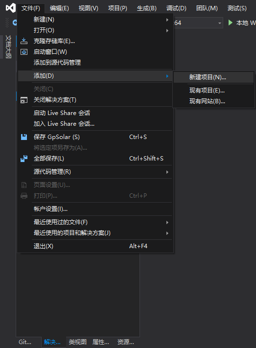 - 在新项目对话框中，找到要使用的测试框架的单元测试项目模板（Google Test），并选择它。
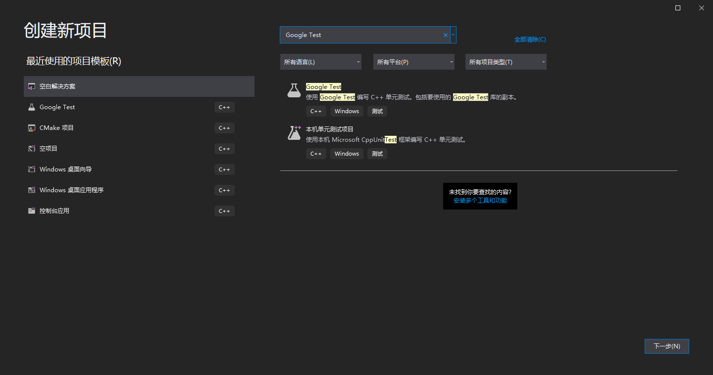 - 配置新项目，并选择”创建”。
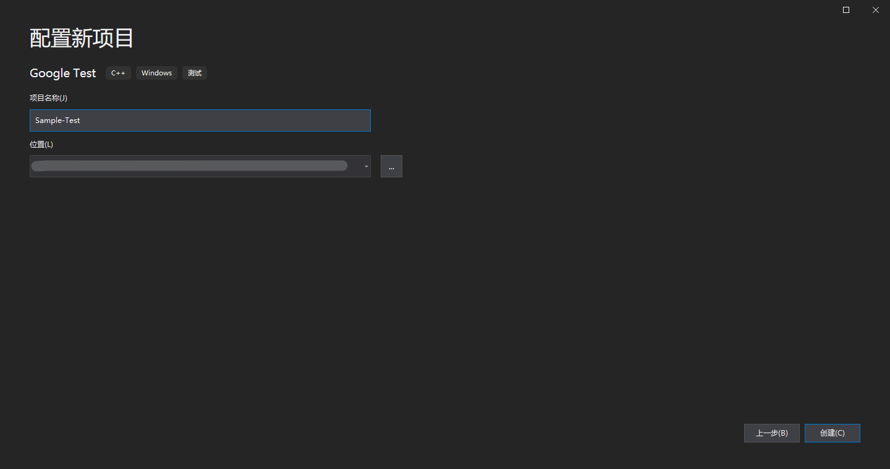 - 测试项目配置。
- 选择要测试的项目。选择一个项目时，Visual Studio会添加对所选项目的引用。不选择任何项目，需要手动添加对要测试项目的引用。
- 在 Google Test 二进制文件的静态和动态链接之间进行选择时，注意事项与任何 C++ 程序相同。 有关详细信息，请参阅 Visual C++ 中的 DLL。
- Google Test 二进制文件会自动下载到解决方案的根路径下的“packages” 文件夹。
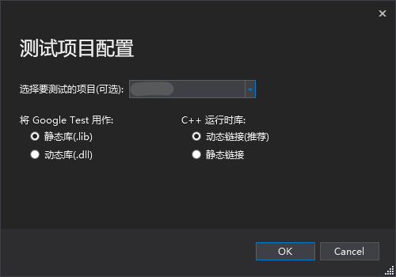
- 添加Include指令。 在test.cpp 文件中，添加任何所需的 #include 指令以使程序的类型和函数对测试代码可见。 通常，程序在文件夹层次结构中的上一层。 如果键入 #include “../“，则会出现一个 IntelliSense 窗口，使你可以选择头文件的完整路径。
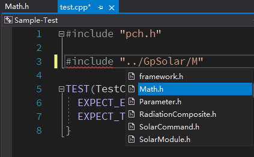 - 运行单元测试，打开测试资源管理器，选择顶部菜单栏中的“测试”>“测试资源管理器”（或按 Ctrl + E，T）。点击”在视图中运行所有测试”。测试资源管理器
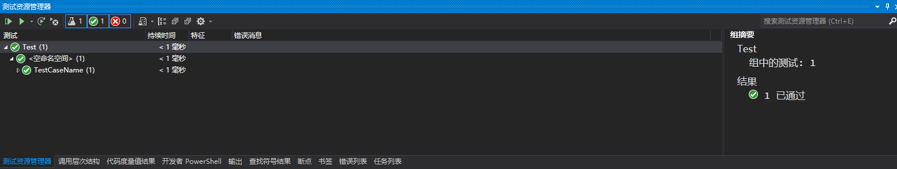
问题清单：
官方文档 如何使用适用于 C++ 的 Google Test - Visual Studio (Windows) | Microsoft Docs
- 无法找到Google Test。 验证是否在计算机上安装了Google Test, 注意只有在isual Studio 2017 及更高版本中Visual Studio才集成了Google Test。验证方式：打开Visual Studio Installer程序，在工作负荷组件下找到Google Test测试适配器：
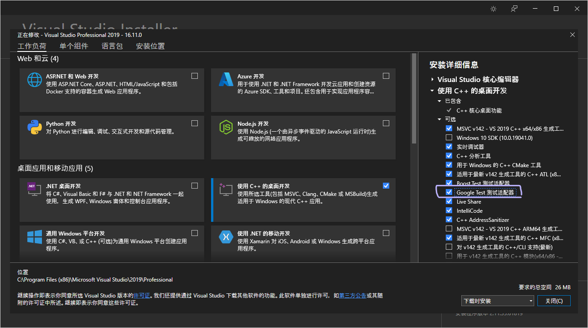 - 无法打开文件gtest_maind.lib。
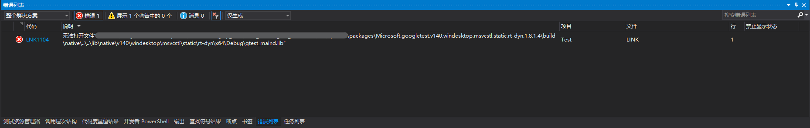 文件路径过长，超出最大路径长度限制。可能是由于最大路径长度限制。 - fatal error C1189: #error: Building MFC application with /MD[d] (CRT dll version) requires MFC shared dll version. Please #define _AFXDLL or do not use /MD[d]
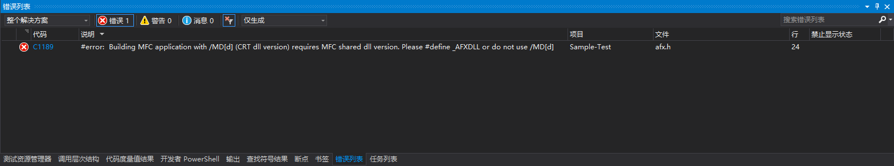 测试项目运行库应与被测试项目的运行库保持一致。若测试项目为在共享DLL中使用MFC，则可依据报错信息在预编译文件“pch.h“中添加#define _AFXDLL。 - error LNK2038: 检测到“RuntimeLibrary”的不匹配项: 值“MDd_DynamicDebug”不匹配值“MTd_StaticDebug”(test.obj 中)。
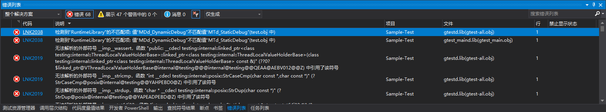 运行库保持不一致，测试项目运行库应与被测试项目的运行库保持一致。 - 项目生成成功而，但是测试资源管理器为空，未显示可用测试。
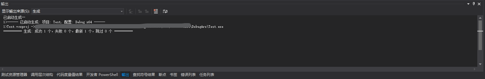 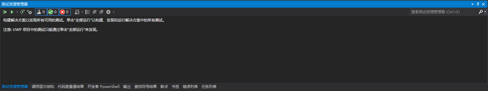 - 打开菜单”视图” > “输出”，显示输出来源选择”测试”。查看输出日志。
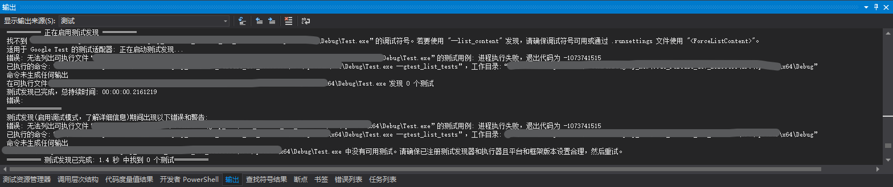 - 确认测试模块的可执行文件与被测试模块的可执行文件文件路径是否相同。
- 打开菜单”视图” > “输出”，显示输出来源选择”测试”。查看输出日志。
- unknown file: error: SEH exception with code 0xc0000005 thrown in the test body. 访问了非法的内存地址。解决方式：在顶部菜单栏中，选择“调试” > “窗口” > “异常设置” ，确保所有项都打勾，然后调试运行，根据报错信息进行修改。
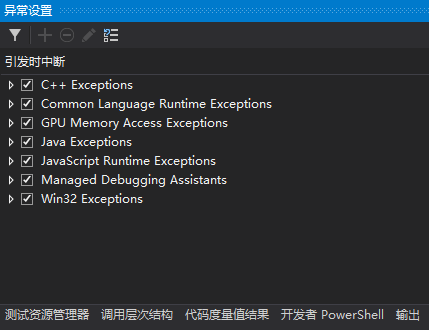